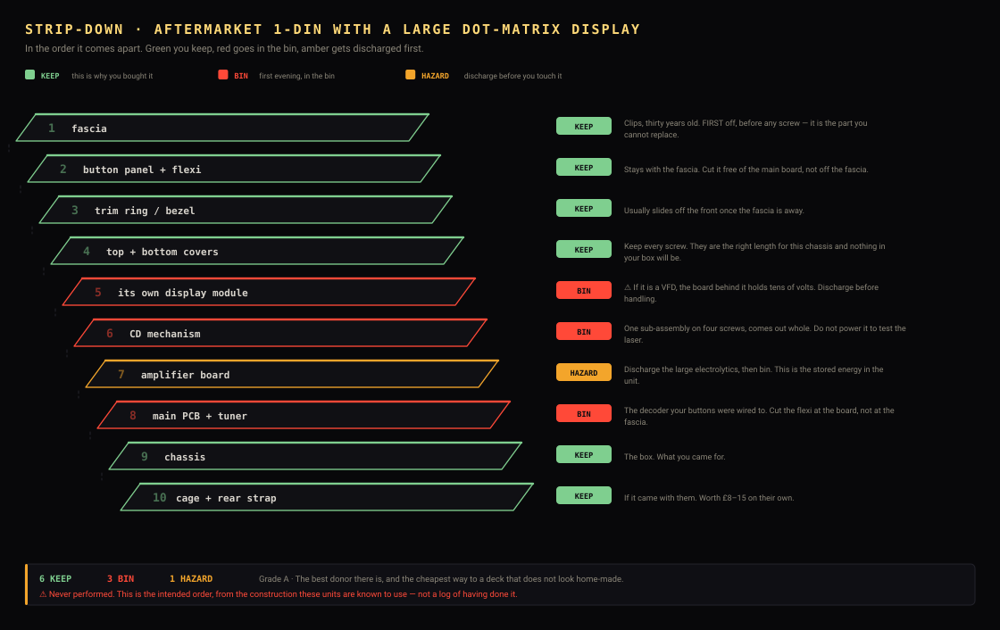

Strip it down. In the order it comes apart, in three colours: green you keep, red goes in the bin, amber gets discharged first.
Each donor family has its own strip-down drawing, generated from the same JSON that describes the family. A list gives you the order; the drawing answers the question you actually have with a screwdriver in your hand — which of these am I about to throw away.

⚠️ The hazard is not the one people expect. The CD laser is class 1 with the lid shut. The real one is a VFD donor's inverter: it makes its own filament and anode supplies — tens of volts, held on a capacitor after power-off. Treat any VFD power board as live until proved otherwise. The safest donors to gut are the LCD ones, even though the VFD ones are prettier.
Eight routes, 42 named models, each flagged ✅ buy it / ⚠️ read the note / ❌ avoid — including a brand-new empty 1-DIN pocket at £6–12, which is the closest thing that exists to a blank head unit and has no laser, no inverter and nothing charged in it. DONORS.md. ❌ Avoid motorised or dual faceplates — DEH-P85BT, Clarion DXZ925, Kenwood KDC-716S — the mechanism eats the depth this build has least of.